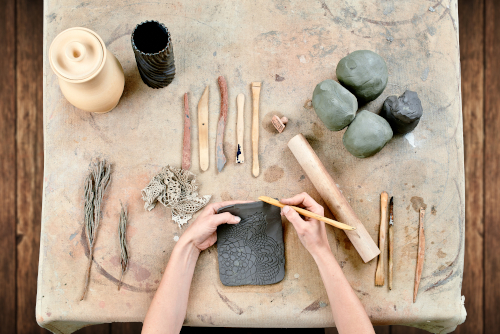
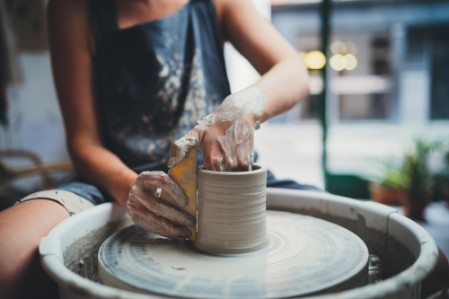

Qu'est-ce que la Poterie ?
La poterie consiste à donner vie à des objets à partir de la manipulation de la terre, aussi appelée argile. Apprendre la poterie, c’est apprendre à fabriquer des pièces utilitaires comme de la vaisselle, des objets décoratifs, des contenants, des sculptures, des figurines… Bref, tu pourras créer une infinité d’objets à partir de la terre mère.

Le Coulage !

Le modelage !
